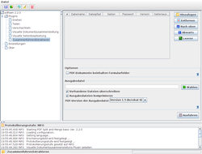

PDF Split and Merge
Dieser Artikel wurde für die folgenden Ubuntu-Versionen getestet:
Ubuntu 16.04 Xenial Xerus
Ubuntu 14.04 Trusty Tahr
Zum Verständnis dieses Artikels sind folgende Seiten hilfreich:
PDF Split and Merge  (oder PDFSam) ist ein in Java programmiertes plattformunabhängiges Programm und in zwei Varianten verfügbar. Die kostenlose Variante kann zum einen mehrere PDF-Dateien zu einer einzigen PDF-Datei zusammenfügen (mergen) und zum anderen eine PDF-Datei in mehrere einzelne aufteilen (splitten).
(oder PDFSam) ist ein in Java programmiertes plattformunabhängiges Programm und in zwei Varianten verfügbar. Die kostenlose Variante kann zum einen mehrere PDF-Dateien zu einer einzigen PDF-Datei zusammenfügen (mergen) und zum anderen eine PDF-Datei in mehrere einzelne aufteilen (splitten).
Ab Version 2.x (kann bisher nur manuell installiert werden, siehe weiter unten) ist PDFSam auch in der Lage, PDF-Dateien zu sortieren (Plugin Visual Reorder) bzw. aus mehreren Dokumenten Seiten zu einer einzigen Datei zusammenzufügen und dabei die gewünschte Seitensortierung zu wählen (Plugin Visual composer). Beim Zusammenfügen werden die Lesezeichen der einzelnen PDF-Dateien übernommen.
Die kostenpflichtige Variante ist PDF Sam enhanced . Diese kann gegen eine Spende (ab 1 US $) vom Autor heruntergeladen werden. Die Unterschiede der beiden Varianten findet man auf dieser Seite . Alternativ kann "PDF Sam enhanced" selbst aus dem Quelltext kompiliert werden. Dazu ist ein "Java Development Kit" (JDK) notwendig.
PDFSam ist unter den Bedingungen der GPL veröffentlicht, ist also samt Quelltext frei und kostenlos verfügbar. Auf der Webseite des Autors sind Programmversionen für Linux, Windows und Mac OS X erhältlich.
Voraussetzungen¶
Das Programm basiert auf Java. Wie man eine Laufzeitumgebung (JRE, ab Version 6) installiert, ist im Artikel Java/Installation/OpenJDK beschrieben.
Unter Ubuntu 16.04 wird standardmäßig OpenJDK in der Version 9 genutzt. Damit startet PDFSam allerdings nicht. Man muss daher zusätzlich OpenJDK in der Version 8 installieren (siehe auch Problembehebung).
Installation¶
Die Programmversion 1.x ist in den offiziellen Paketquellen enthalten und wird mit dem folgenden Paket installiert [2]:
pdfsam (universe)
 mit apturl
mit apturl
Paketliste zum Kopieren:
sudo apt-get install pdfsam
sudo aptitude install pdfsam
Nach der Installation ist bei Ubuntu-Varianten mit einem Anwendungsmenü ein Eintrag unter "Büro -> pdfsam" zu finden, unter KDE 4 liegt der Eintrag im K-Menü unter "Büroprogramme -> pdfsam".
Manuell¶
Wer eine neuere Version einsetzen möchte, kann sich ein fertiges Installationspaket vom Autor herunterladen http://www.pdfsam.org/download-pdfsam-basic/ und dieses mit gdebi installieren oder die nachfolgende Methode einsetzen.
Wer die Version 2.2.4 einsetzen möchte, muss das Programm manuell installieren. Sollte PDFsam bereits aus den offiziellen Paketquellen installiert worden sein, sollte man diese Version vorher deinstallieren und den versteckten Ordner ~/.pdfsam/ im Homeverzeichnis löschen. Dann lädt man sich die Datei pdfsam-2.2.4-out.zip  herunter und entpackt diese [3] in einen beliebigen Ordner im Homeverzeichnis. Zur Verwendung siehe weiter unten.
herunter und entpackt diese [3] in einen beliebigen Ordner im Homeverzeichnis. Zur Verwendung siehe weiter unten.
Hinweis!
Fremdsoftware kann das System gefährden.
Optional können Programme, die an der Paketverwaltung vorbei installiert werden, zur systemweiten Einrichtung nach /opt kopiert werden. Zuerst legt man ein Verzeichnis für PDFSam an [4]:
sudo mkdir /opt/pdfsam
Anschließend sollte der Inhalt des entpackten Ordners nach /opt/pdfsam/ kopiert werden. Hierfür werden Root-Rechte [5] benötigt. Um das Programm bequem starten zu können, fehlt noch ein kleines Startskript. Man erstellt daher mit einem Editor [6] - wiederum mit Root-Rechten - die Datei /usr/local/bin/pdfsam mit folgendem Inhalt:
#!/bin/bash java -jar /opt/pdfsam/pdfsam-VERSION.jar
VERSION muss dabei durch die aktuelle Programmversion ersetzt werden. Wie im Abschnitt Vorraussetzungen beschrieben, muss unter Ubuntu 16.04 Java Version 8 installiert sein und PDFSam damit gestartet werden. Der Befehl lautet dann
#!/bin/bash /usr/lib/jvm/java-8-openjdk-amd64/jre/bin/java -jar /opt/pdfsam/pdfsam-VERSION.jar
Dieses Skript macht man ausführbar [7]:
sudo chmod +x /usr/local/bin/pdfsam
Nun kann PDFSam einfach mit dem Befehl:
pdfsam
gestartet werden. Möchte man PDFSam aus dem Startmenü aufrufen, so muss man einen Eintrag von Hand erstellen [8]. Ein Beispiel für die Datei ~/.local/share/applications/pdfsam.desktop:
[Desktop Entry] Type=Application Name=PDFsam Name[de]=PDFsam GenericName[de]=PDF Bearbeitungsprogramm Comment[de]=PDF Exec=/PFAD/ZU/pdfsam Icon=/PFAD/ZU/pdfsam/doc/icons/pdfsam_basic.png Categories=Office;PDF; Terminal=false
Die Datei muss letztendlich noch ausführbar gemacht werden [7]:
chmod +x ~/.local/share/applications/pdfsam.desktop
Enhanced Edition¶
Die Enhanced Edition ist nicht als fertiges Paket verfügbar. Um die erweiterten Funktionen der Enhanced Edition zu nutzen, ist es nötig, das Programm aus dem Quelltext selbst zu kompilieren. Dieser kann über die Downloadseite oder alternativ bei SourceForge heruntergeladen werden. Außerdem müssen noch die folgenden Pakete für eine erfolgreiche Kompilierung installiert sein:
openjdk-6-jdk (universe, das Java Development Kit (JDK) für Entwickler )
openjdk-6-source (universe, Java Quellcode)
openjdk-6-jre-lib (universe, plattformunabhängige Java-Bibliotheken)
ant (universe, plattformunabhängiges Build-Tool)
mit apturl
Paketliste zum Kopieren:
sudo apt-get install openjdk-6-jdk openjdk-6-source openjdk-6-jre-lib ant
sudo aptitude install openjdk-6-jdk openjdk-6-source openjdk-6-jre-lib ant
Experten-Info:
Es ist gut möglich, dass man statt OpenJDK 6 auch OpenJDK 7 oder die JDKs von Oracle Java nutzen kann. Unter Ubuntu 14.04 verlief die Kompilierung mit OpenJDK 7 erfolgreich. Aber bitte nicht OpenJDK 7 mit einer Java-Laufzeitumgebung (JRE) verwechseln. Es wird zwingend die Entwicklerversion (JDK) benötigt.
Nach der Installation dieser Pakete kann das Programm kompiliert werden. Zuerst wird die Datei pdfsam-<CURRENT_VERSION>-out-src.zip in ein beliebiges Verzeichnis entpackt [4], z.B. den persönlichen Ordner. Nun wechselt man in dieses Verzeichnis. Dort befinden sich nun verschiedene .zip-Dateien, welche alle in dieses Verzeichnis entpackt [4] werden müssen.
Hinweis!
Fremdsoftware kann das System gefährden.
Die Datei ~/pdfsam-<CURRENT_VERSION>-out-src/pdfsam-maine/ant/build.properties wird mit einem Editor geöffnet [3], um die Pfade anzupassen. Hier ein Beispiel:
#deploy target destination dir (if you want to deploy) pdfsam.deploy.dir=../build/pdfsam-basic #root dir where every src directory is located workspace.dir=../ #where classes will be compiled, jars distributed, javadocs created and release created build.dir=../build #version to build pdfsam.version=enhanced #libraries itext.jar.name=iText-2.0.7 log4j.jar.name=log4j-1.2.15 dom4j.jar.name=dom4j-1.6.1 jaxen.jar.name=jaxen-1.1 bcmail.jar.name=bcmail-jdk14-138 bcprov.jar.name=bcprov-jdk14-138 looks.jar.name=looks-2.1.4 jcmdline.jar.name=pdfsam-jcmdline-1.0.3 emp4j.jar.name=emp4j-1.0.0 pdfsam-console.jar.name=pdfsam-console-1.1.4e pdfsam-split.jar.name=pdfsam-split-0.4.5 pdfsam-merge.jar.name=pdfsam-merge-0.6.4 pdfsam-cover.jar.name=pdfsam-cover-0.2.4e pdfsam-encrypt.jar.name=pdfsam-encrypt-0.2.4e pdfsam-mix.jar.name=pdfsam-mix-0.1.3e pdfsam-unpack.jar.name=pdfsam-unpack-0.0.3e pdfsam-langpack.jar.name=pdfsam-langpack
Nun kann das Programm kompiliert werden, und man sollte es ohne Probleme starten können.
#Kompilieren cd ~/pdfsam-<CURRENT_VERSION>-out-src/pdfsam-maine/ant/ ant #In das Programmverzeichnis wechseln cd ~/pdfsam-<CURRENT_VERSION>-out-src/build/pdfsam-maine/release/dist/pdfsam-enhanced #Ausführen java -jar pdfsam-<CURRENT_VERSION>.jar
Ab hier kann man die im Abschnitt Installation beschriebenen Schritte durchführen, um den Programmstart zu erleichtern.
Konfiguration¶
Der Start erfolgt – wie bei Java-Programmen üblich – über den Befehl:
java -jar /PFAD/ZUR/pdfsam-VERSION.jar
Deutsche Sprache¶
Beim ersten Aufruf startet PDFsam in englischer Sprache. Um die deutsche Sprache einzustellen, wählt man den Reiter "Settings". Dort wählt man die Sprache German, speichert ab mit einem Klick auf "Save" und schließt das Programm. Beim nächsten Start von PDFsam sind die Menüs und Schaltflächen-Beschriftungen auf Deutsch.
Die Konfigurationsdaten werden im Ordner ~/.pdfsam/ im Homeverzeichnis gespeichert.
Benutzung¶
PDF-Dateien zusammenfügen¶
|  |
| PDFsam 2.2.0 |
Um mehrere PDF-Dateien zusammen zu fügen, muss man den Reiter "Zusammenführen" (Merge) aktivieren und die "Hinzufügen"-Taste betätigen. Es erscheint ein Menü, in dem man die zu vereinenden PDF-Dateien auswählt. Diese erscheinen nun im Menü wieder. Nun den Ausgabepfad und die Ausgabedatei angeben, dies geschieht mit der "Durchsuchen"-Taste. Mit der "Starten"-Taste wird nun der Prozess gestartet.
Unten im Statusfeld wird man über den Fortschritt der Aktion informiert. Hat alles geklappt, erscheint in der letzten Zeile die Meldung
Total processed pages
gefolgt von der Seitenzahl des Ausgabedokuments. Fehlermeldungen färbt PDFsam rot ein, so dass man auf den ersten Blick sehen kann, ob etwas schiefgegangen ist. Das passiert beispielsweise, wenn man versehentlich eine Datei in einem anderen Format als PDF auswählt.
PDF-Dateien aufteilen¶
PDFSam kann auch ein einzelnes PDF-Dokument mit zwei oder mehr Seiten aufteilen und so z.B. aus einem fünfseitigem Dokument fünf einzelne PDF-Dateien erstellen.
Auf den Reiter "Teilen" (Split) wechseln und das PDF auswählen, das geteilt werden soll. Dazu die Taste "Durchsuchen" wählen. Ist das geschehen, sieht man weiter unten im Menü die Optionen zur Aufteilung:
"in Einzelseiten zerlegen" (Burst) - erzeugt aus jeder Seite des Dokuments eine eigene Datei
"Zerteile nach je "n" Seiten" - mit dieser Option erhält man Dateien mit einer frei wählbaren Seitenzahl
"Zerteile nach geraden Seiten" - man erhält für jede Seite mit gerader Seitenzahl ein neues Dokument
"Zerteile nach ungeraden Seiten" - man erhält für jede Seite mit ungerader Seitenzahl ein neues Dokument.
Unter der Option "Ausgabeordner" gibt man entweder das Originalverzeichnis der Quelldatei ein, oder man setzt einen Haken bei "Bitte Wählen" - So kann man einen anderen Ausgabeordner wählen. Die Bezeichnungen der Ausgabedateien beginnen mit einer Zahl, gefolgt von der unter "Präfix der Ausgabedateien" eingestellten Zeichenkette und dem Namen der Originaldatei.
Benutzung der Kommandozeilenversion¶
Mit Hilfe des Programms "pdfsam-console" lassen sich alle Aufgaben in der Kommandozeile bewerkstelligen. Eine manpage wird nicht angeboten. Die Hilfe lässt sich so aufrufen:
pdfsam-console -help
PDF-Dateien splitten¶
Zerlegt die Datei "x.pdf" alle 6 Seiten:
pdfsam-console -f x.pdf -o . -s NSPLIT -n 6 split
PDF-Dateien zusammenfügen¶
Zum Zusammenfügen der Dateien "1.pdf" und "2.pdf" zu "12.pdf" muss folgender Befehl verwendet werden:
pdfsam-console -f 1.pdf -f 2.pdf -o ./12.pdf concat
Zum Zusammenfügen der pdf-Dateien im Ordner "pdfs" in alphabetischer Reihenfolge zu "zusammen.pdf" ist folgender Befehl zu benutzen:
pdfsam-console -d ./pdfs -o ./zusammen.pdf concat
Optionen zum Zusammenfügen lassen sich auf der Hilfeseite nachlesen:
pdfsam-console -h concat
Problembehebung¶
Mit bestimmter Java-Version starten¶
Unabhängig von der systemweit eingerichteten Java-Version ist es in bestimmten Situationen erforderlich, PDFSam explizit mit einer anderen Java-Version zu starten. Ein Beispiel für OpenJDK 8 und Ubuntu 16.04:
32-Bit:
/usr/lib/jvm/java-8-openjdk-i386/jre/bin/java -jar /PFAD/ZU/pdfsam/pdfsam-VERSION.jar
64-Bit:
/usr/lib/jvm/java-8-openjdk-amd64/jre/bin/java -jar /PFAD/ZU/pdfsam/pdfsam-VERSION.jar
Version 3.x¶
Inzwischen wird auch eine Version 3.x angeboten. Diese setzt zwingend Java 8 oder neuer und JavaFX voraus. Während von Problemen in Kombination mit OpenJDK berichtet wurde, war der Einsatz unter Oracle Java ohne Fehler möglich.
Miniaturansicht funktioniert nicht¶
Das Problem hier ist, dass die Datei libfreetype.so bei Ubuntu 14.04 auf libfreetype.so.6.11.1 aktualisiert wurde und das Programm die Bibliothek nicht mehr findet.
Lösung: Einen passenden Symlink setzen.
32-Bit:
sudo ln -s /usr/lib/i386-linux-gnu/libfreetype.so.6.11.1 /usr/lib/i386-linux-gnu/libfreetype.so.6
64-Bit:
sudo ln -s /usr/lib/x86_64-linux-gnu/libfreetype.so.6.11.1 /usr/lib/x86_64-linux-gnu/libfreetype.so
Setting Look and Feel schlägt fehl¶
Unter Ubuntu 13.04 schlägt der Start der Version 1.x fehl (1167469):
"Setting look and feel ... FATAL ERROR".
Um ein funktionierendes Programm zu erhalten, muss man die Version 2.x manuell installieren.
Links¶
FAQ
- häufige Fragen und AntwortenDokumentation der Version 0.6
 im PDF-Format
im PDF-Format
PDF-Werkstatt mit PDFsam
- heise Open Source, 09/2012PDF-Dateien splitten und zusammenfügen - EasyLinux 01/2007
jPdfTweak
- weiteres Java-Programm zur Bearbeitung von PDF-DateienPDF
 Programmübersicht
Programmübersicht
- Erstellt mit Inyoka
-
 2004 – 2017 ubuntuusers.de • Einige Rechte vorbehalten
2004 – 2017 ubuntuusers.de • Einige Rechte vorbehalten
Lizenz • Kontakt • Datenschutz • Impressum • Serverstatus -
Serverhousing gespendet von